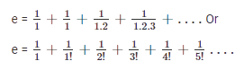

Factoring & Polynomial Long Division/Exponents (e)
Difference of squares. Sum/Difference of Cubes.Euler’s Number, written as e, is probably the second most famous mathematical constant after Pi. But what is Euler’s Number, and how do we calculate it? In fact, why has e become so famous, and why does it deserve a place on our calculators and in the mathematical constant hall of fame?

Rationalizing Expressions/Geometry (e) and Lines
Euler’s number has a value of
Inequalities/Rational Inequalities/Absolute Value
Jacob Bernoulli discovered the mathematical constant e. The expression, given as the sum of infinite for Euler’s constant, e, can also be expressed as;
Therefore, the value of (1+1/n)n reaches e when n reaches ∞. If we put the value of n in the above expression, we can calculate the approximate the number e value. So, let’s start putting the value of n =1 to higher digits.
| n | (1+1/n)n | Value of constant e |
| 1 | (1+1/1)1 | 2.00000 |
| 2 | (1+1/2)2 | 2.25000 |
| 5 | (1+1/5)5 | 2.48832 |
| 10 | (1+1/10)10 | 2.59374 |
| 100 | (1+1/100)100 | 2.70481 |
| 1000 | (1+1/1000)1000 | 2.71692 |
| 10000 | (1+1/10000)10000 | 2.71815 |
| 100000 | (1+1/100000)100000 | 2.71827 |
Complex Numbers/Functions
The exponential constant is a significant mathematical constant and is denoted by the symbol ‘e’. It is approximately equal to
Full value of e
The value of Euler’s number has a very large number of digits. It can go 1000 digits place. But in mathematical calculations, we use only the approximated value of Euler’s number e, equal to 2.72. The first few digits of e are given here though:
How to calculate the value of e?
We have learned till now about the Mathematical constant or Euler’s constant or base of the natural logarithm, e and the values of e. The expression for e to calculate its value was given as;
Now, if we solve the above expression, we can find the approx value of constant e.
Now, taking the first few terms only.
Therefore, the value of e is equal to 2.71828 or e ≈ 2.72.
Where is Euler’s Number eused in the real world?
Compound Interest is not the only practical use for e. In fact, Euler’s number e, the function
- Examples include:
- How populations grow
- How temperature changes as materials heat up or cool down
- Radioactive decay of particles
Euler’s Number (e) and Compound Interest
Euler’s Number e was first discovered by Jacob Bernoulli in the 17th Century when he studied the problem of Compound Interest.
Imagine you have £1 and that you get interest twice a year at a rate of 50%.
At the end of the year you would end up with £1 

Now imagine you have £1 and you get interest 12 times per year, or every month at a rate of 
At the end of the year you would end up with £1
Now imagine you have £1 and you get interest 365 times per year, or every day at a rate of 
At the end of the year you would end up with £1 
Jacob Bernoulli asked an important question: what would happen if you received interest so often that you received it continuously?
In fact, what is the value of 
You might already have guessed the answer, just by looking at our example where n=365, which is already getting quite close to e . This brings us to the most well known way of calculating e:
Don’t forget about eiπ=-1
No discussion about Euler’s Number e would be complete without mentioning one of the most famous equations in mathematics called Euler’s Equation:
Euler’s Equation shows that i, π and e are connected to one another. This is really surprising, given that π comes from looking at the properties of a circle, and e arises from situations which have nothing to do with circles such as compound interest. Euler’s Equation shows that e is more than just a useful number which can be used by scientists to model the real world – it is a fascinating number in its own mathematical right.